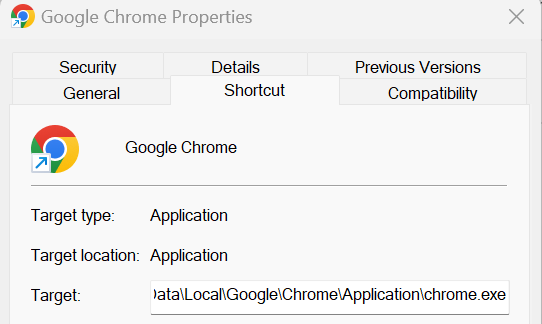

Sys.setenv(no_proxy="*") R
Guidance and tips for using the programming language R
What is R
R is an open-source programming language specifically aimed at statisticians and data analysts.
What is R for
R can be used for almost anything you can think of, notably data analysis, data visualisation, and creating reports and dashboards. It can also be used to extract data from SQL databases and run SQL queries.
How to install R
Download R (language) and RStudio (IDE) from the DfE software center. We also recommend that you download RTools (a helpful R extension) at the same time.
Best places to start
The DfE Analytics Academy host an online R training course on SharePoint. This is a great resource full of reproducible examples using DfE data. The course takes you through initially getting R downloaded, all the way through to developing apps in RShiny.
There is also the DfE R training guide, which is a great starting point and reference to guide you through how to get started using R and RStudio.
As an alternative, with a number of options for beginners to R, RStudio Education provide a variety of materials to suit different learning styles.
Best practice
Tips for reaching best practice in R can be found on our RAP for Statistics page, with guidance on meeting best practice in RAP for clean final code. This makes it easier to read and pick up if another person is running your code.
How to work with R
R Projects
Whenever you are using R, you should work in an RProject. This just makes sure you are set up in the correct working directory, so your code is pointing at the right folders and files.
This guide for using projects in R is a really useful article to help you set up a project.
You can check which project you are working in by looking in the top right hand corner of RStudio:

Outlines
In RStudio you can greatly increase the navigability of your code by taking advantage of outlines. More information on folding and navigating outlines in RStudio can be found online, though when using rmarkdown reports, remember to use names first, such as ## Rows that aren't matching: r nrow(joined %>% filter(matching == FALSE)), rather than having the R code first, so that they are easy to discern in the outline.
renv
You should use the renv package for package and version control in R.
Packages and versions of R regularly update. Over time, this can cause code to break - e.g. if different dependencies are required for later versions of packages to work. Using renv creates a “snapshot” of your code and packages at the time you created it, which anyone can then recreate when they come to use your code.
This is really important for reproducibility, and will help you meet elements of great practice with recyclable code for future use.
renv::restore()
Sometimes renv::restore() can fail, and when in specific renv-controlled projects install.packages() will fail saying that packages aren’t available even when they clearly are. There are a couple of workarounds we have found that get around this failure.
- Configuring the proxy settings by running the below in R - this also helps if you are getting timeout issues when trying to webscrape with R:
- Specifying the renv library as the install location. It’s a bit of a fudge, though these lines are helpful to get the packages from the renv lockfile installed and you running the project when needed:
myPath <- .libPaths()[1]
forceInstall <- function(pkg, path) {
missing <- suppressWarnings(eval(parse(text= paste0("!require(",pkg,")"))))
if(missing == FALSE){
message(pkg, " is already installed.")
} else{
install.packages(pkg, lib = path)
}
}
forceInstall("jsonlite", myPath)
renvPackages <- names(jsonlite::fromJSON("renv.lock", flatten = TRUE)$Packages)
invisible(lapply(renvPackages, forceInstall, path = myPath))More manual equivalent to use for specific packages:
.libPaths() # note down output 1, and reuse in the lib argument of install.packages() as below
install.packages("rmarkdown", lib = "C:/Users/swong/OneDrive - Department for Education/Documents/stats-production-guidance/renv/library/R-4.0/x86_64-w64-mingw32")Updating packages in renv
To update a single package run:
renv::update("dplyr")
To update all packages run:
renv::update()
Installing old package versions in renv
This is surprisingly neat to do. Let’s say you wanted to roll back to version 1.0.2 of dplyr, you would run the following:
renv::install("dplyr@1.0.2")
Quick reference lookup
- If you want a useful guide for R syntax or functions, then look no further than the R cheat sheets, these can be an invaluable point of reference. Below we’ve included a few particularly relevant ones:
- Introduction to the RStudio environment
- Base R
- dplyr for data manipulation
- Data import with the tidyverse
- stringr for string manipulation
- Regex
- RMarkdown
- RShiny
- ggplot2 for data visualisations
- purrr for applying functions
Other resources
Here is another free introduction to R course by Quantargo.
R Markdown: The Definitive Guide, hopefully this one should be relatively self-explanatory!
Data science in education provides a heavily detailed guide for beginners in R learning to process data, with some well written out sections that may be of interest.
Handy guide to collapsing and sectioning R code for easy navigation in RStudio.
Here are 5 handy tidyverse functions that you should know if you’re using R to process data. Number two is especially useful for those processing wide data into a tidy format!
MoJ have produced guidance on writing functions in R
If you’re wondering how best to make the jump to R from Excel and SQL, take a look at this coffee and coding presention by David Sands.
Malcolm Barrett has done some slides on dplyr, ggplot2, and using purrr which may be useful if you’re looking at learning more about any of those packages.
Also check out the janitor package, it has some particularly powerful functions that are worth a look for tidying and QA’ing data.
Excel functions in R
R can do everything you do in excel, but takes out the human error. The reference table below shows how you would carry out popular Excel commands in R.
R comes in with a built-in dataset called “iris”. We’ll use this for all examples so you can recreate them in your local area.
REMEMBER: R is case sensitive, so all references to column names/entries need to be as-is in the dataset you are looking at. Functions exist that can translate all your columns to lower or snake case for ease!
| Common Excel Task | Example with iris | How to do in R with dplyr |
|---|---|---|
| Select specific columns | Select only species and petal length | iris %>% select(Species, Petal.Length) |
| List unique entries in field (column) | Find the unique entries for the “Species” column in iris | iris %>% select(Species) %>% distinct() |
| Filter/select based on criteria | Filter for sepal length >4 and sepal width <2.5, but NOT “versicolor” species | iris %>% filter(Sepal.Length > 4 & Sepal.Width <2.5 & Species != "versicolor") |
| Filter for multiple criteria in same column | Filter for all “setosa” and “versicolor” species | iris %>% filter(Species %in% c("setosa", "versicolor") |
| If else with OR | Create new column called “size_group” based on length or width of petal | iris %>% mutate(size_group =if_else( Petal.Length > 4 | Petal.Width >1.5, "Large", "Small")) |
| Multiple if else | Create new column called “flower_price” based on species and petal length | iris %>% mutate(flower_price = case_when( Species == "setosa" & Petal.Length > 1.5 ~"top band",Species == "versicolor" & Petal.Length < 4 ~"low_band",TRUE ~ "mid_band")) |
| COUNTIF | Count the number of species if they have a petal length >1.5 | iris %>% filter(Petal.Length > 1.5 ) %>%group_by(Species) %>% count() |
| SUMIF | Sum petal width of species if sepal width <3 | iris %>% filter(Sepal.Width <3) %>%group_by(Species) %>%summarise(Petal.Width = sum(Petal.Width)) |
| VLOOKUP | Lookup to a table called “lookup” | iris %>% left_join(lookup, by.x="Species", by.y ="plant_species") |
| Order by | Order dataset by descending petal width | iris %>% arrange(desc(Petal.Width)) |
More tips for moving from using Excel to using R can be found in the excel-to-R wiki.
SQL function equivalents in R
R can do a lot of the things that are possible in SQL. The reference table below shows how you would carry out some popular SQL commands in R.
REMEMBER: R is case sensitive, so all references to column names/entries need to be as-is in the dataset you are looking at. Functions exist that can translate all your columns to lower or snake case for ease!
| Common SQL Task | How to do in R (with dplyr) |
|---|---|
| SELECT * FROM TABLE | table %>% select() |
| SELECT ColA, ColB, ColC FROM TABLE | table %>% select(ColA, ColB, ColC) |
| SELECT DISTINCT ColA FROM TABLE | table %>% select(ColA) %>% distinct() |
| TABLE A LEFT JOIN (TABLE B) ON TABLEA.x = TABLEB.y | tableA %>% left_join(TableB, by = c(x = y)) |
| CASE WHEN x = 1 THEN 1, WHEN x =2 THEN 2, ELSE 0 END AS New_column_name | %>% mutate (New_column_name = case_when (x == 1 ~ 1, x == 2 ~ 2, TRUE ~ 0)) |
| CONCAT(LEA, ESTAB) AS LAESTAB | %>% mutate(LAESTAB = paste0(LEA, ESTAB)) |
| SELECT COUNT(*) FROM TABLE | table %>% nrow() |
| SELECT COUNT(ColA) FROM TABLE | table %>% count(colA) |
| SELECT Date_column = CONVERT(DATE, Date_column) FROM TABLE | table %>% mutate(Date_column = as.Date(Date_column)) |
| SELECT Number_column = CONVERT(INT, Number_column ) FROM TABLE | table %>% mutate(Number_column = as.numeric(Number_column)) |
| SELECT String_column = CONVERT(VARCHAR, String_column ) FROM TABLE | table %>% mutate(String_column = as.character(String_column)) |
| DROP TableA | rm(TableA) |
More tips for moving from using SQL to using R can be found in the SQL-to-R wiki.
Interacting with a SQL database from within R-scripts
R can be used to execute SQL scripts to extract data from a database as well as querying the database directly via R. There are two primary ways to do this:
- executing a SQL script as is within R and
- using dbplyr to create SQL code for you.
Which you use will depend on how comfortable with SQL and R and also if you already have existing SQL scripts that you want to execute or you’re writing new database queries.
Executing SQL scripts from within R
This is primarily useful if you already have existing SQL scripts that you want to build into an R controlled pipeline. For using R to execute a SQL script you’ll need the SQL script/s to be in your R Project and to make a connection via R to the database.
Example code and a walkthrough guide is available in the Connecting to SQL page in the dfeR package documentation.
Using dbplyr to create database queries
If you’re familiar with dplyr then using the dbplyr package to interact with a SQL database is a good way to go. It allows you to use common dplyr functions such as select(), filter(), mutate(), group_by(), summarise() and arrange() with a SQL database.
As with sending a SQL script, you’ll need to create the connection to the database as shown in the dfeR package and then create piped queries as you would with dplyr:
# Library calls ====
library(odbc)
library(DBI)
library(dplyr)
library(dbplyr)
# DB connection ====
con <- DBI::dbConnect(odbc::odbc(),
Driver = "ODBC Driver 17 for SQL Server",
Server = "server_name",
Database = "database_name",
UID = "",
PWD = "",
Trusted_Connection = "Yes"
)
query_result <- collect(
tbl(con, Id(schema='dbo', table='table_name')) %>%
select(example_id_column, example_filter_column, example_indicator_column) %>%
filter(example_filter_column=='Filter entry 1', example_indicator_column <= 120)
)The key differences to just using dplyr with a data frame are:
- we use tbl() to point to the SQL table on the SQL database in place of supplying a data-frame
- we use the collect() function to tell R to collate the commands and run them on the SQL database
Common issues interacting with a SQL database from within R
DBI varchar(max) column ordering bug
A known bug in DBI is that if a SQL table contains columns of type varchar(max), then any queries including those columns will fail if those columns aren’t the last to be called in the query. This is a bit esoteric, but you can identify this issue if you’re getting the following error message when you run your query:
Error: nanodbc/nanodbc.cpp:3166: 07009: [Microsoft][SQL Server Native Client 11.0]Invalid Descriptor Index
Warning message:
In dbClearResult(rs) : Result already clearedThere are a couple of solutions to this:
- avoid creating tables containing varchar(max) columns (i.e. always set a field length for your character fields)
- make sure all varchar(max) columns are placed last in ay select query that you write
This latter route can be automated using the following function:
tbl_fix_nvarchar <- function(con, schema, table){
column.types <- dbGetQuery(
con,
paste0("SELECT COLUMN_NAME, DATA_TYPE, CHARACTER_MAXIMUM_LENGTH FROM INFORMATION_SCHEMA.COLUMNS ",
"WHERE TABLE_NAME='",table,"'")
)
ct <- column.types %>%
mutate(cml = case_when(
is.na(CHARACTER_MAXIMUM_LENGTH) ~ 10,
CHARACTER_MAXIMUM_LENGTH == -1 ~ 100000,
TRUE ~ as.double(CHARACTER_MAXIMUM_LENGTH)
)
) %>%
arrange(cml) %>%
pull(COLUMN_NAME)
tbl(con, Id(schema=schema, table=table)) %>% select(all_of(ct))
}This queries the properties of the SQL table that you’re interacting with, identifies any varchar(max) columns (i.e. where CHARACTER_MAXIMUM_LENGTH equals 1) and then creates a column ordering in your query whereby any varchar(max) columns present are placed to the end.
Tips for using R
A selection of handy bits of code and workarounds for common issues. More useful code snippets can also be found in our github repo
Specifying a version of R to use
This can be done most easily by navigating in RStudio through Tools > Global options > General > Basic > R version (change). It’s likely you’ll need to restart RStudio for the changes to take affect.
Rounding
The base R function of round() can behave unusually due to the way numbers are stored within R itself. round() is supposed to use a ‘banker’s round’, in which mid-point values (e.g. 0.5, 1.5, 2.5) are rounded to the closest even number. For example, using round(), 1.5 should round to 2, but 2.5 should also round to 2. This is different than the way in which SQL performs rounding, which is always to round numbers at the mid-way point up to the next number (e.g. 2.5 rounds to 3).
However, when investigating numbers in R, you can see that they are not always stored in the way you might think. This is due to floating point numbers. Whilst humans use base 10 (numbers 0-9), computers store numbers in a binary (base 2) system as a combinations of 1s and 0s. When translating between base 2 and base 10, sometimes numbers can be not quite what we expect. For example, asking R to print the number 1.4 to 18 decimal places shows that it is actually stored as:
sprintf("%.18f", 1.4)
[1] "1.399999999999999911"These slight differences in the floating point numbers behind the scenes can result in unusual rounding errors using round(). If you’re interested, there’s more information available in these forum posts.
To round numbers upwards in a way that is consistent with SQL and other programming languages, we recommend using the roundFiveUp() function in the dfeR R package.
Making maps
Boundary files
Most maps we’ll want to make will be based on boundaries provided from the Open Geography Portal.
Take heed of the homepage and details on the codes for map resolution, usually the ultra generalised BUC boundaries are the best option for us as they still provide plenty of detail but are far smaller in size than the other formats.
Some examples of commonly used boundary files from the Open Geography Portal (based on latest available at time of writing, always make sure the year of the boundaries is the most relevant for your own data!):
- Parliamentary Constituency - Westminster Parliamentary Constituencies (July 2024) Boundaries UK BUC
- Local authority - Counties and Unitary Authorities (December 2023) Boundaries UK BUC
- Local authority district - Local Authority Districts (May 2024) Boundaries UK BUC
- Local skills improvement areas - Local Skills Improvement Plan Areas (August 2023) Boundaries EN BUC
When downloading the boundaries you’ll have a choice of file formats, we’d generally recommend the GeoPackage format as that comes as a single file, though both Shapefile (will get 4/5 files needed to read a single boundary layer) or GeoJSON (sometimes larger file size and needs more processing) are possible options too. There are numerous debates online about these that you can delve into if you so desire.
If you want to edit the boundaries, whether that is to edit the coordinate system, file type or to simplify them at all, have a look at the interactive website for mapshaper, there’s also an accompanying rmapshaper R package.
Packages
Known package options for building maps are (note this is not an exhaustive list):
For interactive maps in dashboard leaflet is most frequently used in DfE currently.
The sf package is usually needed for processing spatial data in R, be aware that the first time you install this it can take a number of minutes.
Example shiny app with map
# Shiny app ===================================================================
# Minimal example code for a shiny app with interactive map
# Can copy and paste into a single app.R file and run to test
# Pre-processing of data (do this in a separate script to the app) ============
# Load dependencies -----------------------------------------------------------
library(leaflet) # using leaflet for the interactive map
library(dplyr) # used for data processing
library(sf) # used for reading geospatial data
# Pre-process data before app -------------------------------------------------
# Create an example file using the locations look ups
example_data <- read.csv("https://raw.githubusercontent.com/dfe-analytical-services/dfe-published-data-qa/main/data/lsips.csv") %>%
mutate(example_count = sample(38)) # number of rows in data frame
# Pull in boundary data from the Open Geography Portal
# Download GeoPackage format and save in repo from:
# https://geoportal.statistics.gov.uk/datasets/72bd510b46a7483194237ede9db0a267_0/explore
boundary_data <- st_read("Local_Skills_Improvement_Plan_Areas_August_2023_Boundaries_EN_BUC_3056517900557747412.gpkg")
# Join the data together and save ready for the app
map_data <- boundary_data %>%
right_join(example_data, by = join_by(LSIP23CD == lsip_code)) %>%
# Convert coordinates to World Geodetic System
st_transform(crs = 4326)
saveRDS(map_data, "map_data.RDS")
# R Shiny App =================================================================
# Global.R file ---------------------------------------------------------------
library(shiny)
library(leaflet)
# Load in map data
map_data <- readRDS("map_data.RDS")
# ui.R file -------------------------------------------------------------------
ui <- fluidPage(
# Show interactive map
leafletOutput("example_map")
)
# server.R file ---------------------------------------------------------------
server <- function(input, output) {
output$example_map <- renderLeaflet({
# Set the color scheme and scale
pal_fun <- colorNumeric(
"Blues",
domain = c(
min(map_data$example_count),
max(map_data$example_count)
)
)
# Set a pop up
map_popup <- paste(
map_data$example_count,
" example count for ",
map_data$lsip_name
)
# Create the map
map <- leaflet(
map_data,
# Take off annoying scrolling, personal preference
options = leafletOptions(scrollWheelZoom = FALSE)
) %>%
# Set the basemap (this is a good neutral one)
addProviderTiles(providers$CartoDB.PositronNoLabels) %>%
# Add the shaded regions
addPolygons(
color = "black",
weight = 1,
fillColor = pal_fun(map_data[["example_count"]]),
popup = map_popup
) %>%
# Add a legend to the map
addLegend("topright",
pal = pal_fun,
values = ~map_data[["example_count"]],
title = "Example map title"
)
})
}
# Run the application ---------------------------------------------------------
shinyApp(ui = ui, server = server)R Shiny peformance
Maps can be intensive and slow to process, and when placed in R Shiny dashboards this can sometimes make users have to wait longer than we’d like.
- Pre-process as much as you can
First, it is best to do all the joining and processing you can before the dashboard, and then save the data as an RDS file to read into the app later. This will minimise the processing R has to do in preparing the file.
- Simplify the map detail
If you’re using a particularly detailed map, you can sometimes simplify the files used to help reduce the size, this will make the map less precise but have a trade off of speeding up the load times. See the boundary files section for more information.
- Only change the layers you need to
If the map layers on top are reactive (e.g. shaded polygons that change based on a user interaction like a dropdown), consider using the leafletProxy function from the Leaflet package to change only the layer you need to while leaving the base map static.
- If all else fails, try the magical hammer of caching
Caching allows you to save the outputs and then return them without having to run the process again. Caution and thorough testing is advised as this can get complicated and easily lead to bugs, though great rewards lurk beyond the risk. If you’re interested in looking at this route, take a look at the caching section of the mastering shiny guide.
Passing variables as arguments
This can be worked around by using a combination of eval() and parse(), as shown in the below function:
showFilterLevels <- function(data, meta) {
filters <- meta %>%
filter(col_type == "Filter") %>%
pull(col_name)
levelsTable <- function(filter) {
return(eval(parse(text = paste0("data %>% select(", filter, ") %>% distinct()"))))
}
output <- lapply(filters, levelsTable)
return(output)
}Reverse additive filters
You might want to filter your dataset based on multiple negative conditions. Normally to filter on multiple conditions, you would use filter(condition1 & condition2). The “filter” function does not work well with negative conditions (i.e. filtering for cases where condition 1 and condition 2 are not met). Instead, you can use subset(!(condition1 & condition2).
File locations
Struggling to get files to talk to one another, or get code to find and use another R script? Use here::here() and marvel at it’s wondrous ability to magic away issues.
Interweaving vectors
There’s an easy way to interweave multiple vectors into one single vector using c(rbind()). The example below shows two vectors, but you can have even more if you need.
#Two vectors, x and y
x <- 1:3
y <- 4:6
#Run code to interweave
c(rbind(x, y))
#Output below
# [1] 1 4 2 5 3 6Making charts interactive
When pulling ggplot charts into RMarkdown reports, you can consider making them even more user-friendly and interactive with plotly. Further information on how to make your charts interactive with plotly can be found online.
#Simple ggplot chart called "p"
p <- ggplot(dat, aes(x=xvar, y=yvar)) +
geom_point(shape=1) # Use hollow circles
#Apply ggplotly() to it to make it interactive
fig <- ggplotly(p)Replace all values with another
Have you ever needed to replace every value in your data with another? This can come in handy when you are looking at suppression, e.g. converting all NAs to “z” or all values under a certain threshold to “c”.
data %>% mutate_all(~ replace(., . == "Value to replace", "Replacement"))Temporary groups
The group_by() function in dplyr is really useful, but can be fiddly if you only want to use it for one operation in a chunk of code. The with_groups() function from dplyr lets you do this, saving you having to group and ungroup data each time.
data %>% mutate(annual_average = with_groups(time_period, mean))Finding package dependencies
Often we’ll take chunks of code and reuse them for new projects. This can lead to building up a long list of packages to install, not all of which end up being used in your new code. The NCmisc package is a really handy way to check which packages and functions are used in your code.
Firstly, load up all the packages the code has library() commands for, then run the following:
list.functions.in.file('your-filename-here.R', alphabetic = TRUE)Visualise dependencies
The depgraph package allows you to plot a graph of all the dependencies in your R project, which can be a useful tool to help you cut down on the number of package dependencies. Briefly, in these graphs you can look for “hot spots” in the network (big bright dots), which represent packages that have many upstream dependencies but are potentially easy to remove because they have few downstream dependencies (that is, only your package depends on them).
plot_dependency_graph(
pkg = multibridge_pkg
, suggests = FALSE
, option = "cividis"
)Reproducible random numbers
The set.seed() function generates a sequence of random numbers, starting from the value you define in the brackets. This ensures you get the same sequence of random numbers each time you run set.seed() with the same value, which is helpful to test that your results are reproducible.
# random sampling
> sample(LETTERS, 5)
[1] "K" "N" "R" "Z" "G"
> sample(LETTERS, 5)
[1] "L" "P" "J" "E" "D"
# reproducible random sampling
> set.seed(42); sample(LETTERS, 5)
[1] "Q" "E" "A" "J" "D"
> set.seed(42); sample(LETTERS, 5)
[1] "Q" "E" "A" "J" "D"Automatic logging
The tidylog package is a really useful tool for providing automated feedback on dplyr and tidyr operations.
library(tidylog)
filtered <- filter(mtcars, cyl == 4)
#> filter: removed 21 rows (66%), 11 rows remaining
mutated <- mutate(mtcars, new_var = wt ** 2)
#> mutate: new variable 'new_var' (double) with 29 unique values and 0% NATroubleshooting
Can’t find make error
This error will appear when trying to restore old package versions using renv::restore(). It is usually due to Rtools not being properly installed, and therefore your system is struggling to install the older version of the package that hasn’t been provided by CRAN.
The solution takes a few minutes, but is relatively straightforward, you can install Rtools as a direct download from the Software Centre. On there, pick the right version of RTools for your version of R and install the application.
Once it’s installed close and reopen RStudio and run renv::restore() again - it should hopefully now restore and install your packages successfully!
Packages not downloading due to “wininet” error (renv 0.17)
Packages are generally downloaded from CRAN using one of two methods: wininet or curl. Since renv version 0.17, analysts potentially hit an error associated with renv defaulting to wininet, whilst R defaults to curl, causing package downloads to fail. To fix this issue, analysts should change their default download method with renv to be curl. This can be done across all R-projects on your machine, by setting the default in your global R environment file (.Renviron). If you don’t know where to find your .Renviron file, then you can run the command usethis::edit_r_environ() (you may have to install the usethis package first) to open it in R-Studio. Once you’ve got it open, then add the following line to the .Renviron file:
RENV_DOWNLOAD_METHOD = "curl"
Then restart R-Studio and downloads with renv should now succeed.
SSL certificate errors
The DfE firewall currently blocks access to external sites from DfE laptops when connecting from common analytical software such as R or Python. This can prevent analysts from accessing important external resources such as package repositories and data API endpoints. If you get an error including text along the lines of “self signed SSL certificate not allowed” or anything similar involving SSL certificates (or certs.), then contact the Statistics Development Team with a copy of the command that you’re running and the error that it’s producing. We can then work with the Network Operations team to prevent this being a blocker to your work.
shinytest2 - Invalid path to Chrome (chromote) error message
Sometimes when attempting to run tests using shinytest2, you will get the following error:
Error in initialize(...) : Invalid path to Chrome
Shinytest2 relies on Google Chrome to run, and so it needs to know where it has been installed on your computer. Chrome is not a standard piece of software for DfE laptops, so there are a few steps you can follow to resolve this issue.
Before you try any of the steps below, please check that you have Google Chrome installed. You can download Chrome from the Google Chrome website. You may get an error message saying that you do not have adminstrator permissions when you run the install file. Click “No”, and you should be presented with another window that says “Google Chrome can be installed without administrator privileges. Continue?”. Click “Yes” on this screen and Chrome should install.
If you have Chrome installed and continue to get the chromote error when using shinytest2, then you’ll need to set an environment variable to tell R where to find Chrome.
The first step to resolve this is to set the path to chrome.exe (the Chrome application file itself where you’ve installed it) via the console for the current session. You can find the file path for your local Chrome installation by following these steps:
- Click the Start button
- Right click on the Chrome icon and click ‘Open File Location’
- When the folder opens, right click on Google Chrome inside the folder and click ‘Properties’
- Copy the file path inside the Target box (see image below)

Set the CHROMOTE_CHROME environment variable to the path to the chrome.exe file on your computer. If you have followed the instructions above to copy the file path then you will need to make sure that you change the \ to / before you run the code otherwise it will not work. As an example it should look something like this:
Sys.setenv(CHROMOTE_CHROME = "C:/Users/jbloggs/AppData/Local/Google/Chrome/Application/chrome.exe")
To set the environment variable, you’ll need to edit your .Renviron file. This will fix the error across all R projects. If you don’t know where to find the .Renviron file, you can use the usethis package to open it in R-Studio using usethis::edit_r_environ(). Then set the CHROMOTE_CHROME environment variable to the path to chrome.exe on your computer. As an example it should look something like this:
CHROMOTE_CHROME="C:/Users/jbloggs/AppData/Local/Google/Chrome/Application/chrome.exe"
Note: remember to give the path using forward-slashes (/) rather than back-slashes (\).
Once you’ve added that and saved the .Renviron file, restart your R session and that should then be loaded and shinytest2 will run. You can double check that it’s set the environment variable properly by running the following command:
Sys.getenv("CHROMOTE_CHROME")
That command should return the path that you entered for Chrome.
Using R with ADA / Databricks
See our guidance on how to connect to Databricks SQL Warehouse from R Studio, and how to connect to Databricks personal cluster from R studio
You can also view example R code using the Databricks code template notebooks